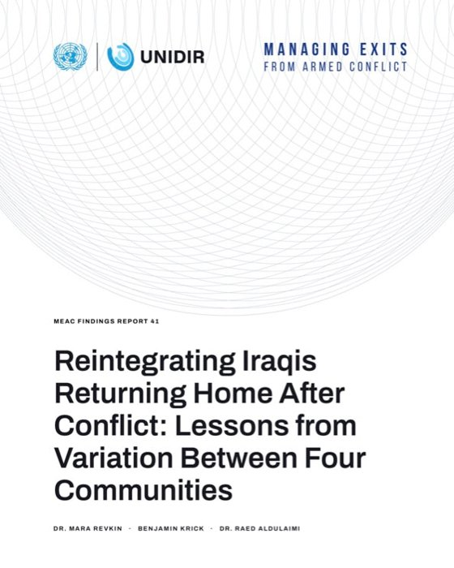
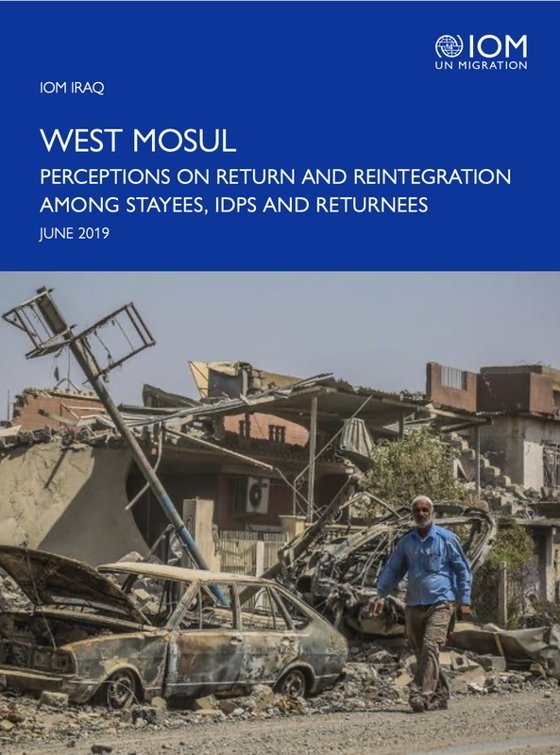
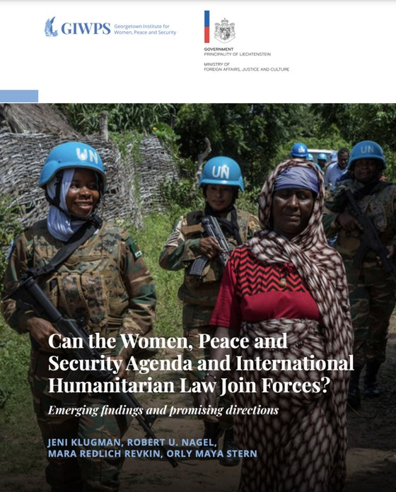
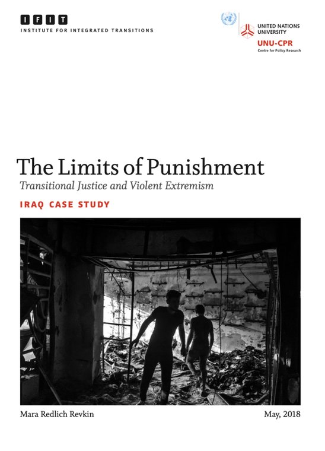
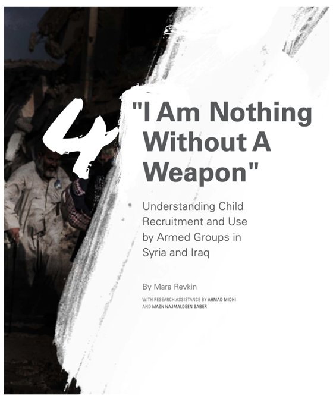
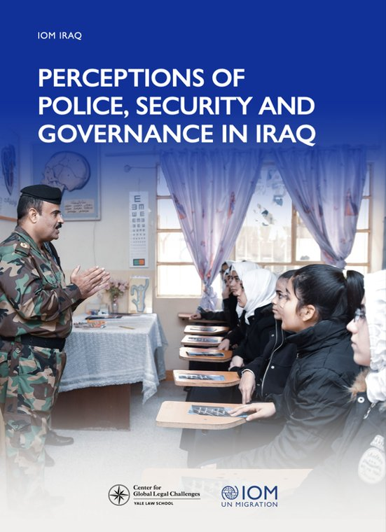
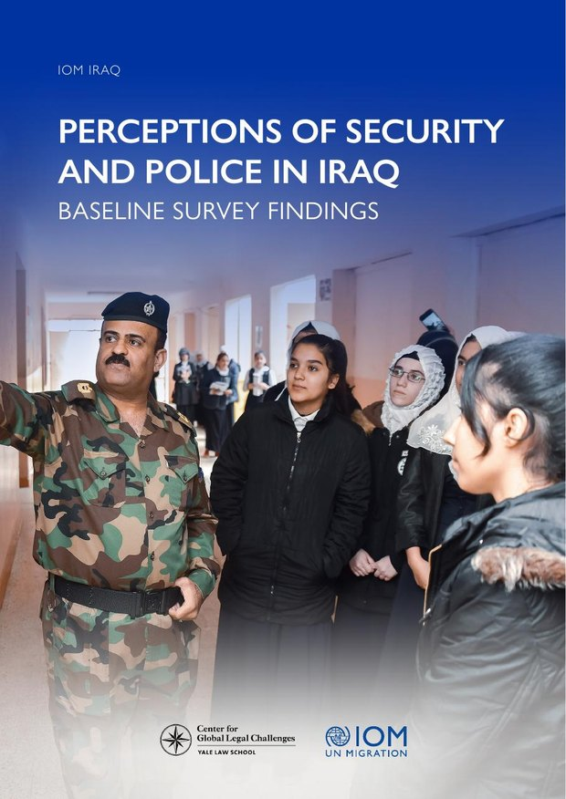
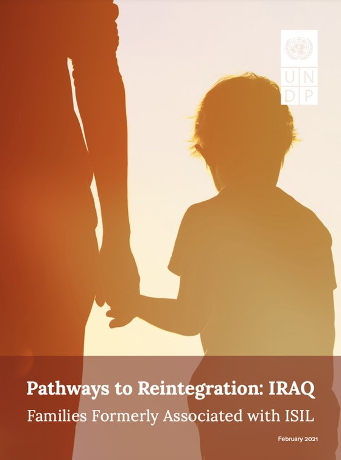

With the UN Institute for Disarmament Research (UNIDIR, 2025)

With the International Organization for Migration (IOM, 2019)

With Georgetown GIWPS (2021)

With United Nations University (2019)

With United Nations University

With IOM Iraq—Perceptions of Police

With IOM Iraq—Baseline Survey

With UNDP Iraq—Pathways to Reintegration
To display actual report covers, download the cover images from your current Weebly site and place them in the images/ folder, then replace the placeholder divs above with <img> tags.